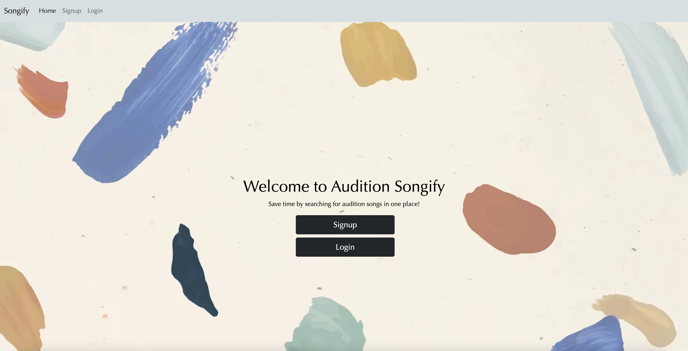

Projects
Deep dive into what I've worked on.
Audition Songify - Capstone Project
This web app is for the musical theatre nerds that need to find an audition song. It allows users looking for musical theatre audition songs to narrow their search by genre, show, songwriter, and tempo. I built built this app using Ruby on Rails utilizing RESTful routes, and Vue.js
